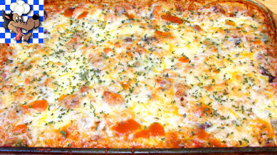

Mexican Chicken and Rice Casserole

A stick to your ribs budget recipie
Ingredients
- 3-4 lbs - Chicken Thighs (skinned removed, boned and cut into bite size pieces)
- 16 oz - Brown Rice
- 15 oz can - Kidney Beans (undrained)
- 15 oz can - Diced Tomatoes with Green Chiles
- 1 - Bell Pepper (diced)
- 1 - Yellow Onion (diced)
- 8 oz - Shredded Mexican Blend Cheese
- 1 - Taco Seasoning Packet
- 30 oz - Water
Directions
- In a large skillet over medium high heat cook chicken 2-3 minutes.
- Add bell pepper, onions and cook another 2 minutes.
- Add remaining ingredients except the cheese and mix well.
- Transfer to a 9x13 casserole dish and cover tightly with aluminum foil.
- Bake in a 375º oven for 1 hour or until all of the liquid has been absorbed.
- Mix in half the cheese, then top with remaining cheese and bake uncovered 5-7 minutes in a 400º oven or until golden brown and bubbly.
- Let rest for 10 minutes.
Enjoy
Return to main page